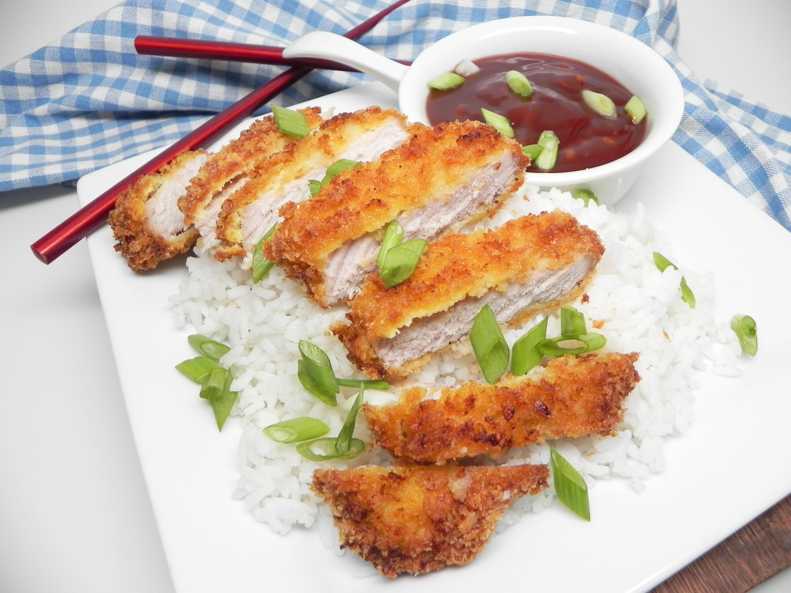

Tonkatsu recipe

Description
Tonkatsu is a traditional japanese dish that consists of a pork cutlet that is breaded and deep-fried.
Usually made with pork fillet or loin and sometimes air-fried instead of deep-fried. It can be eaten as a main
dish, usually served with rice, shredded cabbage and tonkatsu sauce,
or as a basis for recipes such as Katsukare or Katsudon .In
this recipe we will be using the pork loin and the air-frying method.
Ingredients
- 1 pound boneless pork loin
- Salt and ground black pepper to taste
- 2 large eggs
- 1 ½ cups of panko bread crumbs
- nonstick cooking spray
Steps
- Whisk together ketchup, soy sauce, brown sugar, sherry, Worcestershire sauce, and garlic together in a bowl until
sugar has dissolved. Set tonkatsu sauce aside.
- Preheat an air fryer to 350 degrees F (175 degrees C).
- Lay pork chops on a clean work surface and season with salt and pepper.
- Beat eggs in a flat dish. Place bread crumbs in a separate flat dish. Dredge pork chops first in egg and then in
bread crumbs. Repeat by dredging pork chops in egg and then breadcrumbs again, pressing down so that bread crumbs
stick to the chops.
- Place pork chops in the basket of the preheated air fryer and spray the tops with nonstick cooking spray. Air fry
for 10 minutes. Flip chops over using a spatula and spray the tops with nonstick cooking spray again. Cook for 10 more
minutes.
- Transfer to a cutting board and slice. Serve with reserved sauce, rice and shredded cabbage.